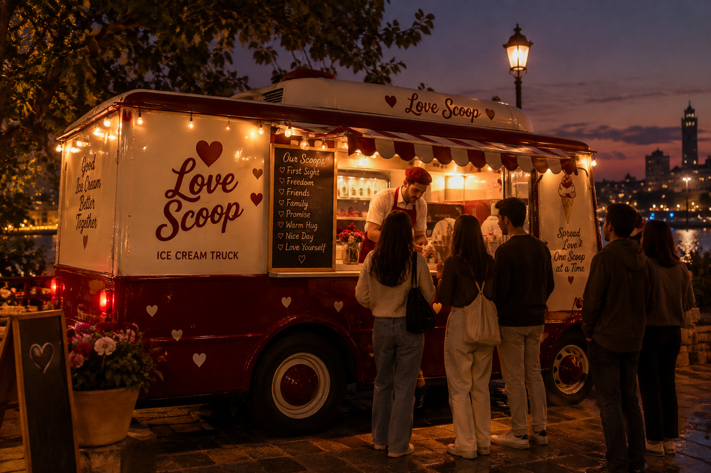

First Sight
For the butterflies of a first date.
A LOVE STORY ON WHEELS
A little scoop of love, wherever you go.

What if something as simple as a scoop of ice cream could bring two people closer?
Love Scoop was born from a little dream: to bring love, peace, and beautiful moments to the streets of Egypt. We believe that sometimes, all it takes is a quiet evening, two melting scoops, and a little time together to make the world feel softer.
We are more than an ice cream truck. We are a little corner of romance on wheels, traveling from one place to another, leaving behind smiles, sweet memories, and moments worth remembering.
A simple date after a long day. A warm hug after a difficult conversation. A first confession of love, whispered over your favorite flavor. A family laughing together, or friends making memories they will talk about for years.
These are the moments we dream of creating.
At Love Scoop, every flavor has a feeling behind it.
For the butterflies of a first date.

For the people who make life sweeter.

For the warmth of home and the people we love.

For the words you mean with all your heart.

For the comfort of being held close.

For the little joys that make life beautiful.

For the journey of self-love and acceptance.
Each scoop is a little reminder that feelings deserve to be celebrated, and that the smallest moments can become the most beautiful memories.
Our truck travels across Egypt, turning ordinary places into little moments of magic. Wherever we park, we hope to create an atmosphere where strangers smile at one another, couples reconnect, friends stay a little longer, and someone finds the courage to say what they have been feeling.
Because love doesn't always need grand gestures or expensive plans. Sometimes, it just needs a place to begin.
Our mission is simple: to make the world a little sweeter, one stop, one smile, and one scoop at a time.
So, wherever you are in your story, there's always a little room for love.
Meet us on the road. Your next beautiful memory might be just one scoop away.
Love, always.
Love Scoop — Where Every Scoop Means Something.
